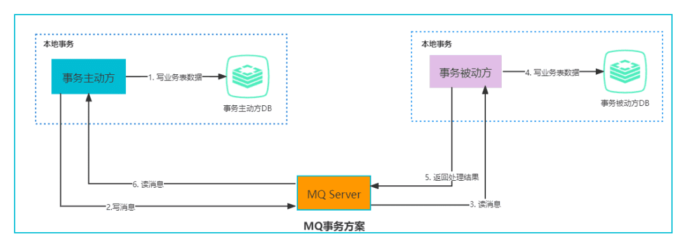
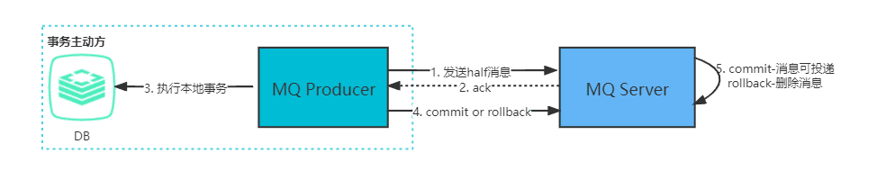

分布式系统
简介
一个分布式系统是一些独立的计算机集合，但是对这个系统的用户来说，系统就像一台计算机一样。
分布式系统是一个硬件或软件组件分布在不同的网络计算机上，彼此之间仅仅通过消息传递进行通信和协调的系统。简单来说就是一群独立计算机集合共同对外提供服务，但是对于系统的用户来说，就像是一台计算机在提供服务一样。分布式意味着可以采用更多的普通计算机（相对于昂贵的大型机）组成分布式集群对外提供服务。计算机越多，CPU、内存、存储资源等也就越多，能够处理的并发访问量也就越大。
从分布式系统的概念中我们知道，各个主机之间通信和协调主要通过网络进行，所以分布式系统中的计算机在空间上几乎没有任何限制，这些计算机可能被放在不同的机柜上，也可能被部署在不同的机房中，还可能在不同的城市中，对于大型的网站甚至可能分布在不同的国家和地区。
特征
- 分布性
分布式系统中的多台计算机之间在空间位置上可以随意分布，同时，机器的分布情况也会随时变动。
- 对等性
分布式系统中的计算机没有主／从之分，即没有控制整个系统的主机，也没有被控制的从机，组成分布式系统的所有计算机节点都是对等的。副本（Replica）是分布式系统最常见的概念之一，指的是分布式系统对数据和服务提供的一种冗余方式。在常见的分布式系统中，为了对外提供高可用的服务，我们往往会对数据和服务进行副本处理。数据副本是指在不同节点上持久化同一份数据，当某一个节点上存储的数据丢失时，可以从副本上读取该数据，这是解决分布式系统数据丢失问题最为有效的手段。另一类副本是服务副本，指多个节点提供同样的服务，每个节点都有能力接收来自外部的请求并进行相应的处理。
- 自治性
分布式系统中的各个节点都包含自己的处理机和内存，各自具有独立的处理数据的功能。通常，彼此在地位上是平等的，无主次之分，既能自治地进行工作，又能利用共享的通信线路来传送信息，协调任务处理。
- 并发性
在一个计算机网络中，程序运行过程的并发性操作是非常常见的行为。例如同一个分布式系统中的多个节点，可能会并发地操作一些共享的资源，如何准确并高效地协调分布式并发操作也成为了分布式系统架构与设计中最大的挑战之一。
问题
- 缺乏全局时钟
在分布式系统中，很难定义两个事件究竟谁先谁后，原因就是因为分布式系统缺乏一个全局的时钟序列控制。
- 机器宕机
机器宕机是最常见的异常之一。在大型集群中每日宕机发生的概率为千分之一左右，在实践中，一台宕机的机器恢复的时间通常认为是24 小时，一般需要人工介入重启机器。
- 网络异常
消息丢失，两片节点之间彼此完全无法通信，即出现了“网络分化”；消息乱序，有一定的概率不是按照发送时的顺序依次到达目的节点，考虑使用序列号等机制处理网络消息的乱序问题，使得无效的、过期的网络消息不影响系统的正确性；数据错误；不可靠的TCP，TCP 协议为应用层提供了可靠的、面向连接的传输服务，但在分布式系统的协议设计中不能认为所有网络通信都基于TCP 协议则通信就是可靠的。TCP协议只能保证同一个TCP 链接内的网络消息不乱序，TCP 链接之间的网络消息顺序则无法保证。
- 分布式三态
如果某个节点向另一个节点发起RPC(Remote procedure call)调用，即某个节点A 向另一个节点B 发送一个消息，节点B 根据收到的消息内容完成某些操作，并将操作的结果通过另一个消息返回给节点A，那么这个RPC 执行的结果有三种状态：“成功”、“失败”、“超时（未知）”，称之为分布式系统的三态。
- 存储数据丢失
对于有状态节点来说，数据丢失意味着状态丢失，通常只能从其他节点读取、恢复存储的状态。 异常处理原则：被大量工程实践所检验过的异常处理黄金原则是：任何在设计阶段考虑到的异常情况一定会在系统实际运行中发生，但在系统实际运行遇到的异常却很有可能在设计时未能考虑，所以，除非需求指标允许，在系统设计时不能放过任何异常情况。
指标
- 性能
系统的吞吐能力，指系统在某一时间可以处理的数据总量，通常可以用系统每秒处理的总的数据量来衡量；系统的响应延迟，指系统完成某一功能需要使用的时间；系统的并发能力，指系统可以同时完成某一功能的能力，通常也用QPS(query per second)来衡量。上述三个性能指标往往会相互制约，追求高吞吐的系统，往往很难做到低延迟；系统平均响应时间较长时，也很难提高QPS。
- 可用性
系统的可用性(availability)指系统在面对各种异常时可以正确提供服务的能力。系统的可用性可以用系统停服务的时间与正常服务的时间的比例来衡量，也可以用某功能的失败次数与成功次数的比例来衡量。可用性是分布式的重要指标，衡量了系统的鲁棒性，是系统容错能力的体现。
- 可扩展性
系统的可扩展性(scalability)指分布式系统通过扩展集群机器规模提高系统性能（吞吐、延迟、并发）、存储容量、计算能力的特性。好的分布式系统总在追求“线性扩展性”，也就是使得系统的某一指标可以随着集群中的机器数量线性增长。
- 一致性
分布式系统为了提高可用性，总是不可避免的使用副本的机制，从而引发副本一致性的问题。越是强的一致的性模型，对于用户使用来说使用起来越简单。
理论
CAP
CAP理论是分布式系统、特别是分布式存储领域中被讨论的最多的理论。其中C代表一致性 (Consistency)，A代表可用性 (Availability)，P代表分区容错性 (Partition tolerance)。CAP理论告诉我们C、A、P三者不能同时满足，最多只能满足其中两个。

BASE
BASE是“Basically Available, Soft state, Eventually consistent(基本可用、软状态、最终一致性)”的首字母缩写。其中的软状态和最终一致性这两种技巧擅于对付存在分区的场合，并因此提高了可用性。
全局唯一ID
常见的分布式ID生成方式，大致分类的话可以分为两类：一种是类DB型的，根据设置不同起始值和步长来实现趋势递增，需要考虑服务的容错性和可用性; 另一种是类snowflake型，这种就是将64位划分为不同的段，每段代表不同的涵义，基本就是时间戳、机器ID和序列数。这种方案就是需要考虑时钟回拨的问题以及做一些 buffer的缓冲设计提高性能。
为什么需要
传统的单体架构的时候，我们基本是单库然后业务单表的结构。每个业务表的ID一般我们都是从1增，通过AUTO_INCREMENT=1设置自增起始值，但是在分布式服务架构模式下分库分表的设计，使得多个库或多个表存储相同的业务数据。这种情况根据数据库的自增ID就会产生相同ID的情况，不能保证主键的唯一性。

如上图，如果第一个订单存储在 DB1 上则订单 ID 为1，当一个新订单又入库了存储在 DB2 上订单 ID 也为1。我们系统的架构虽然是分布式的，但是在用户层应是无感知的，重复的订单主键显而易见是不被允许的。那么针对分布式系统如何做到主键唯一性呢？
UUID
UUID （Universally Unique Identifier），通用唯一识别码的缩写。UUID是由一组32位数的16进制数字所构成，所以UUID理论上的总数为 16^32=2^128，约等于 3.4 x 10^38。也就是说若每纳秒产生1兆个UUID，要花100亿年才会将所有UUID用完。
生成的UUID是由 8-4-4-4-12格式的数据组成，其中32个字符和4个连字符’ - ‘。
虽然 UUID 生成方便，本地生成没有网络消耗，但是使用起来也有一些缺点，
- 不易于存储：UUID太长，16字节128位，通常以36长度的字符串表示，很多场景不适用。
- 信息不安全：基于MAC地址生成UUID的算法可能会造成MAC地址泄露，暴露使用者的位置。
- 对MySQL索引不利：如果作为数据库主键，在InnoDB引擎下，UUID的无序性可能会引起数据位置频繁变动，严重影响性能，可以查阅 Mysql 索引原理 B+树的知识。
数据库生成
是不是一定要基于外界的条件才能满足分布式唯一ID的需求呢，我们能不能在我们分布式数据库的基础上获取我们需要的ID？
由于分布式数据库的起始自增值一样所以才会有冲突的情况发生，那么我们将分布式系统中数据库的同一个业务表的自增ID设计成不一样的起始值，然后设置固定的步长，步长的值即为分库的数量或分表的数量。
以MySQL举例，利用给字段设置auto_increment_increment和auto_increment_offset来保证ID自增。
auto_increment_offset：表示自增长字段从那个数开始，他的取值范围是1 .. 65535。auto_increment_increment：表示自增长字段每次递增的量，其默认值是1，取值范围是1 .. 65535。
假设有三台机器，则DB1中order表的起始ID值为1，DB2中order表的起始值为2，DB3中order表的起始值为3，它们自增的步长都为3，则它们的ID生成范围如下图所示：

通过这种方式明显的优势就是依赖于数据库自身不需要其他资源，并且ID号单调自增，可以实现一些对ID有特殊要求的业务。
但是缺点也很明显，首先它强依赖DB，当DB异常时整个系统不可用。虽然配置主从复制可以尽可能的增加可用性，但是数据一致性在特殊情况下难以保证。主从切换时的不一致可能会导致重复发号。还有就是ID发号性能瓶颈限制在单台MySQL的读写性能。
redis
Redis实现分布式唯一ID主要是通过提供像 INCR 和 INCRBY 这样的自增原子命令，由于Redis自身的单线程的特点所以能保证生成的 ID 肯定是唯一有序的。
但是单机存在性能瓶颈，无法满足高并发的业务需求，所以可以采用集群的方式来实现。集群的方式又会涉及到和数据库集群同样的问题，所以也需要设置分段和步长来实现。
为了避免长期自增后数字过大可以通过与当前时间戳组合起来使用，另外为了保证并发和业务多线程的问题可以采用 Redis + Lua的方式进行编码，保证安全。
Redis 实现分布式全局唯一ID，它的性能比较高，生成的数据是有序的，对排序业务有利，但是同样它依赖于redis，需要系统引进redis组件，增加了系统的配置复杂性。
当然现在Redis的使用性很普遍，所以如果其他业务已经引进了Redis集群，则可以资源利用考虑使用Redis来实现。
snowflake
Snowflake，雪花算法是由Twitter开源的分布式ID生成算法，以划分命名空间的方式将 64-bit位分割成多个部分，每个部分代表不同的含义。而 Java中64bit的整数是Long类型，所以在 Java 中 SnowFlake 算法生成的 ID 就是 long 来存储的。
- 第1位占用1bit，其值始终是0，可看做是符号位不使用。
- 第2位开始的41位是时间戳，41-bit位可表示2^41个数，每个数代表毫秒，那么雪花算法可用的时间年限是
(1L<<41)/(1000L360024*365)=69 年的时间。 - 中间的10-bit位可表示机器数，即2^10 = 1024台机器，但是一般情况下我们不会部署这么台机器。如果我们对IDC（互联网数据中心）有需求，还可以将 10-bit 分 5-bit 给 IDC，分5-bit给工作机器。这样就可以表示32个IDC，每个IDC下可以有32台机器，具体的划分可以根据自身需求定义。
- 最后12-bit位是自增序列，可表示2^12 = 4096个数。
这样的划分之后相当于在一毫秒一个数据中心的一台机器上可产生4096个有序的不重复的ID。但是我们 IDC 和机器数肯定不止一个，所以毫秒内能生成的有序ID数是翻倍的。

雪花算法提供了一个很好的设计思想，雪花算法生成的ID是趋势递增，不依赖数据库等第三方系统，以服务的方式部署，稳定性更高，生成ID的性能也是非常高的，而且可以根据自身业务特性分配bit位，非常灵活。
但是雪花算法强依赖机器时钟，如果机器上时钟回拨，会导致发号重复或者服务会处于不可用状态。如果恰巧回退前生成过一些ID，而时间回退后，生成的ID就有可能重复。官方对于此并没有给出解决方案，而是简单的抛错处理，这样会造成在时间被追回之前的这段时间服务不可用。
很多其他类雪花算法也是在此思想上的设计然后改进规避它的缺陷，后面介绍的美团分布式ID生成系统 Leaf中snowflake模式都是在 snowflake 的基础上演进出来的。
美团Leaf
Leaf是美团基础研发平台推出的一个分布式ID生成服务，名字取自德国哲学家、数学家莱布尼茨的著名的一句话：“There are no two identical leaves in the world”，世间不可能存在两片相同的叶子。
Leaf 也提供了两种ID生成的方式，分别是Leaf-segment数据库方案和Leaf-snowflake 方案。
Leaf-segment 数据库方案
Leaf-segment 数据库方案，是在上文描述的在使用数据库的方案上，做了如下改变：
- 原方案每次获取ID都得读写一次数据库，造成数据库压力大。改为利用proxy server批量获取，每次获取一个segment(step决定大小)号段的值。用完之后再去数据库获取新的号段，可以大大的减轻数据库的压力。
- 各个业务不同的发号需求用
biz_tag字段来区分，每个biz-tag的ID获取相互隔离，互不影响。如果以后有性能需求需要对数据库扩容，不需要上述描述的复杂的扩容操作，只需要对biz_tag分库分表就行。
数据库表设计：
1 | CREATE TABLE `leaf_alloc` ( |
原来获取ID每次都需要写数据库，现在只需要把step设置得足够大，比如1000。那么只有当1000个号被消耗完了之后才会去重新读写一次数据库。读写数据库的频率从1减小到了1/step，大致架构如下图所示：
同时Leaf-segment 为了解决 TP999（满足千分之九百九十九的网络请求所需要的最低耗时）数据波动大，当号段使用完之后还是会hang在更新数据库的I/O上，TP999 数据会出现偶尔的尖刺的问题，提供了双buffer优化。
简单的说就是，Leaf 取号段的时机是在号段消耗完的时候进行的，也就意味着号段临界点的ID下发时间取决于下一次从DB取回号段的时间，并且在这期间进来的请求也会因为DB号段没有取回来，导致线程阻塞。如果请求DB的网络和DB的性能稳定，这种情况对系统的影响是不大的，但是假如取DB的时候网络发生抖动，或者DB发生慢查询就会导致整个系统的响应时间变慢。
为了DB取号段的过程能够做到无阻塞，不需要在DB取号段的时候阻塞请求线程，即当号段消费到某个点时就异步的把下一个号段加载到内存中，而不需要等到号段用尽的时候才去更新号段。这样做就可以很大程度上的降低系统的 TP999 指标。详细实现如下图所示：
采用双buffer的方式，Leaf服务内部有两个号段缓存区segment。当前号段已下发10%时，如果下一个号段未更新，则另启一个更新线程去更新下一个号段。当前号段全部下发完后，如果下个号段准备好了则切换到下个号段为当前segment接着下发，循环往复。
- 每个biz-tag都有消费速度监控，通常推荐segment长度设置为服务高峰期发号QPS的600倍（10分钟），这样即使DB宕机，Leaf仍能持续发号10-20分钟不受影响。
- 每次请求来临时都会判断下个号段的状态，从而更新此号段，所以偶尔的网络抖动不会影响下个号段的更新。
对于这种方案依然存在一些问题，它仍然依赖 DB的稳定性，需要采用主从备份的方式提高 DB的可用性，还有 Leaf-segment方案生成的ID是趋势递增的，这样ID号是可被计算的，例如订单ID生成场景，通过订单id号相减就能大致计算出公司一天的订单量，这个是不能忍受的。
Leaf-snowflake方案
Leaf-snowflake方案完全沿用 snowflake 方案的bit位设计，对于workerID的分配引入了Zookeeper持久顺序节点的特性自动对snowflake节点配置 wokerID。避免了服务规模较大时，动手配置成本太高的问题。
Leaf-snowflake是按照下面几个步骤启动的：
- 启动Leaf-snowflake服务，连接Zookeeper，在leaf_forever父节点下检查自己是否已经注册过（是否有该顺序子节点）。
- 如果有注册过直接取回自己的workerID（zk顺序节点生成的int类型ID号），启动服务。
- 如果没有注册过，就在该父节点下面创建一个持久顺序节点，创建成功后取回顺序号当做自己的workerID号，启动服务。
为了减少对 Zookeeper的依赖性，会在本机文件系统上缓存一个workerID文件。当ZooKeeper出现问题，恰好机器出现问题需要重启时，能保证服务能够正常启动。
上文阐述过在类 snowflake算法上都存在时钟回拨的问题，Leaf-snowflake在解决时钟回拨的问题上是通过校验自身系统时间与 leaf_forever/${self}节点记录时间做比较然后启动报警的措施。
美团官方建议是由于强依赖时钟，对时间的要求比较敏感，在机器工作时NTP同步也会造成秒级别的回退，建议可以直接关闭NTP同步。要么在时钟回拨的时候直接不提供服务直接返回ERROR_CODE，等时钟追上即可。或者做一层重试，然后上报报警系统，更或者是发现有时钟回拨之后自动摘除本身节点并报警。
在性能上官方提供的数据目前 Leaf 的性能在4C8G 的机器上QPS能压测到近5w/s，TP999 1ms。
分布式锁
简介
线程锁：主要用来给方法、代码块加锁。当某个方法或代码使用锁，在同一时刻仅有一个线程执行该方法或该代码段。线程锁只在同一JVM中有效果，因为线程锁的实现在根本上是依靠线程之间共享内存实现的，比如synchronized是共享对象头，显示锁Lock是共享某个变量（state）。
进程锁：为了控制同一操作系统中多个进程访问某个共享资源，因为进程具有独立性，各个进程无法访问其他进程的资源，因此无法通过synchronized等线程锁实现进程锁。
分布式锁：当多个进程不在同一个系统中(比如分布式系统中控制共享资源访问)，用分布式锁控制多个进程对资源的访问。
设计原则
分布式锁的最小设计原则：安全性和有效性
Redis官网上对使用分布式锁提出至少需要满足如下三个要求：
- 互斥（属于安全性）：在任何给定时刻，只有一个客户端可以持有锁。
- 无死锁（属于有效性）：即使锁定资源的客户端崩溃或被分区，也总是可以获得锁；通常通过超时机制实现。
- 容错性（属于有效性）：只要大多数 Redis 节点都启动，客户端就可以获取和释放锁。
除此之外，分布式锁的设计中还可以/需要考虑：
- 加锁解锁的同源性：A加的锁，不能被B解锁
- 获取锁是非阻塞的：如果获取不到锁，不能无限期等待；
- 高性能：加锁解锁是高性能的
实现方案
基于数据库实现分布式锁
基于数据库表（锁表，很少使用）
乐观锁(基于版本号)
悲观锁(基于排它锁)
基于 redis 实现分布式锁:
单个Redis实例：setnx(key,当前时间+过期时间) + Lua
Redis集群模式：Redlock
基于 zookeeper实现分布式锁
基于 Consul 实现分布式锁
基于数据库
基于数据库表
最简单的方式可能就是直接创建一张锁表，然后通过操作该表中的数据来实现了。当我们想要获得锁的时候，就可以在该表中增加一条记录，想要释放锁的时候就删除这条记录。
基于悲观锁
- 在对任意记录进行修改前，先尝试为该记录加上排他锁（exclusive locking）。
- 如果加锁失败，说明该记录正在被修改，那么当前查询可能要等待或者抛出异常。 具体响应方式由开发者根据实际需要决定。
- 如果成功加锁，那么就可以对记录做修改，事务完成后就会解锁了。
- 其间如果有其他对该记录做修改或加排他锁的操作，都会等待我们解锁或直接抛出异常。
以MySQL InnoDB中使用悲观锁为例？
要使用悲观锁，我们必须关闭mysql数据库的自动提交属性，因为MySQL默认使用autocommit模式，也就是说，当你执行一个更新操作后，MySQL会立刻将结果进行提交。set autocommit=0;
1 | //0.开始事务 |
上面的查询语句中，我们使用了select…for update的方式，这样就通过开启排他锁的方式实现了悲观锁。此时在t_goods表中，id为1的 那条数据就被我们锁定了，其它的事务必须等本次事务提交之后才能执行。这样我们可以保证当前的数据不会被其它事务修改。
上面我们提到，使用select…for update会把数据给锁住，不过我们需要注意一些锁的级别，MySQL InnoDB默认行级锁。行级锁都是基于索引的，如果一条SQL语句用不到索引是不会使用行级锁的，会使用表级锁把整张表锁住，这点需要注意。
基于乐观锁
乐观并发控制（又名“乐观锁”，Optimistic Concurrency Control，缩写“OCC”）是一种并发控制的方法。它假设多用户并发的事务在处理时不会彼此互相影响，各事务能够在不产生锁的情况下处理各自影响的那部分数据。在提交数据更新之前，每个事务会先检查在该事务读取数据后，有没有其他事务又修改了该数据。如果其他事务有更新的话，正在提交的事务会进行回滚。
以使用版本号实现乐观锁为例？
使用版本号时，可以在数据初始化时指定一个版本号，每次对数据的更新操作都对版本号执行+1操作。并判断当前版本号是不是该数据的最新的版本号。
1 | 1.查询出商品信息 |
需要注意的是，乐观锁机制往往基于系统中数据存储逻辑，因此也具备一定的局限性。由于乐观锁机制是在我们的系统中实现的，对于来自外部系统的用户数据更新操作不受我们系统的控制，因此可能会造成脏数据被更新到数据库中。在系统设计阶段，我们应该充分考虑到这些情况，并进行相应的调整（如将乐观锁策略在数据库存储过程中实现，对外只开放基于此存储过程的数据更新途径，而不是将数据库表直接对外公开）。
缺陷
对数据库依赖，开销问题，行锁变表锁问题，无法解决数据库单点和可重入的问题。
基于redis
set NX PX + Lua
加锁： set NX PX + 重试 + 重试间隔
向Redis发起如下命令: SET productId:lock 0xx9p03001 NX PX 30000 其中，”productId”由自己定义，可以是与本次业务有关的id，”0xx9p03001”是一串随机值，必须保证全局唯一(原因在后文中会提到)，“NX”指的是当且仅当key(也就是案例中的”productId:lock”)在Redis中不存在时，返回执行成功，否则执行失败。”PX 30000”指的是在30秒后，key将被自动删除。执行命令后返回成功，表明服务成功的获得了锁。
解锁：采用lua脚本
在删除key之前，一定要判断服务A持有的value与Redis内存储的value是否一致。如果贸然使用服务A持有的key来删除锁，则会误将服务B的锁释放掉。
基于RedLock
这是Redis作者推荐的分布式集群情况下的方式。
假设有两个服务A、B都希望获得锁，有一个包含了5个redis master的Redis Cluster，执行过程大致如下:
- 客户端获取当前时间戳，单位: 毫秒
- 服务A轮寻每个master节点，尝试创建锁。(这里锁的过期时间比较短，一般就几十毫秒) RedLock算法会尝试在大多数节点上分别创建锁，假如节点总数为n，那么大多数节点指的是n/2+1。
- 客户端计算成功建立完锁的时间，如果建锁时间小于超时时间，就可以判定锁创建成功。如果锁创建失败，则依次(遍历master节点)删除锁。
- 只要有其它服务创建过分布式锁，那么当前服务就必须轮寻尝试获取锁。
基于Redis的客户端
这里Redis的客户端（Jedis, Redisson, Lettuce等）都是基于上述两类形式来实现分布式锁的，只是两类形式的封装以及一些优化（比如Redisson的watch dog)。
以基于Redisson实现分布式锁为例（支持了 单实例、Redis哨兵、redis cluster、redis master-slave等各种部署架构）：
特色？
- redisson所有指令都通过lua脚本执行，保证了操作的原子性
- redisson设置了watchdog看门狗，“看门狗”的逻辑保证了没有死锁发生
- redisson支持Redlock的实现方式。
过程？
- 线程去获取锁，获取成功: 执行lua脚本，保存数据到redis数据库。
- 线程去获取锁，获取失败: 订阅了解锁消息，然后再尝试获取锁，获取成功后，执行lua脚本，保存数据到redis数据库。
互斥？
如果这个时候客户端B来尝试加锁，执行了同样的一段lua脚本。第一个if判断会执行“exists myLock”，发现myLock这个锁key已经存在。接着第二个if判断，判断myLock锁key的hash数据结构中，是否包含客户端B的ID，但明显没有，那么客户端B会获取到pttl myLock返回的一个数字，代表myLock这个锁key的剩余生存时间。此时客户端B会进入一个while循环，不听的尝试加锁。
watch dog自动延时机制？
客户端A加锁的锁key默认生存时间只有30秒，如果超过了30秒，客户端A还想一直持有这把锁，怎么办？其实只要客户端A一旦加锁成功，就会启动一个watch dog看门狗，它是一个后台线程，会每隔10秒检查一下，如果客户端A还持有锁key，那么就会不断的延长锁key的生存时间。
可重入？
每次lock会调用incrby，每次unlock会减一。
借助Redis实现分布式锁时，有一个共同的缺陷：当获取锁被拒绝后，需要不断的循环，重新发送获取锁(创建key)的请求，直到请求成功。这就造成空转，浪费宝贵的CPU资源。
分布式事务
简介
事务是一个程序执行单元，里面的所有操作要么全部执行成功，要么全部执行失败。而分布式事务是指事务的参与者、支持事务的服务器、资源服务器以及事务管理器分别位于不同的分布式系统的不同节点之上。如何保证这些操作要么全部执行成功要么全部执行失败呢？这便是分布式事务要解决的问题。
以一个网上的经典下单减库存例子为例：
单体应用所有的业务都使用一个数据库，整个下单流程或许只用在一个方法里同一个事务下操作数据库即可。此时所有操作都在一个事务里，要么全部提交，要么全部回滚。
但随着业务量不断增长，业务服务化拆分，就会分离出订单中心、库存中心等。而这样就造成业务间相互隔离，每个业务都维护着自己的数据库，数据的交换只能进行服务调用。
用户再下单时，创建订单和扣减库存，需要同时对订单DB和库存DB进行操作。两步操作必须同时成功，否则就会造成业务混乱，可此时我们只能保证自己服务的数据一致性，无法保证调用其他服务的操作是否成功，所以为了保证整个下单流程的数据一致性，就需要分布式事务介入。

理解
理论角度
分布式的理论基础是CAP，由于P(分区容错）是必选项，所以只能在AP或者CP中选择。
- 分布式理论的CP -> 刚性事务
遵循ACID，对数据要求强一致性
- 分布式理论的AP+BASE -> 柔性事务
遵循BASE，允许一定时间内不同节点的数据不一致，但要求最终一致。
事务体系

刚性事务：分布式理论的CP，遵循ACID，对数据要求强一致性。
XA协议是一个基于数据库层面的分布式事务协议，其分为两部分：事务管理器（Transaction Manager）和本地资源管理器（Resource Manager）。事务管理器作为一个全局的调度者，负责对各个本地资源管理器统一号令提交或者回滚。主流的诸如Oracle、MySQL等数据库均已实现了XA接口。
- 二阶提交协议（2PC）: 根据XA协议衍生出来而来; 引入一个作为协调者的组件来统一掌控所有参与者的操作结果并最终指示这些节点是否要把操作结果进行真正的提交; 参与者将操作成败通知协调者，再由协调者根据所有参与者的反馈情报决定各参与者是否要提交操作还是中止操作。所谓的两个阶段是指：第一阶段：准备阶段 (投票阶段) 和第二阶段：提交阶段（执行阶段）
- 三阶提交协议（3PC）: 是对两段提交（2PC）的一种升级优化，3PC在2PC的第一阶段和第二阶段中插入一个准备阶段。保证了在最后提交阶段之前，各参与者节点的状态都一致。同时在协调者和参与者中都引入超时机制，当参与者各种原因未收到协调者的commit请求后，会对本地事务进行commit，不会一直阻塞等待，解决了2PC的单点故障问题，但3PC还是没能从根本上解决数据一致性的问题。
Java事务规范
- JTA：Java事务API（Java Transaction API）是一个Java企业版的应用程序接口，在Java环境中，允许完成跨越多个XA资源的分布式事务。
- JTS：Java事务服务（Java Transaction Service）是J2EE平台提供了分布式事务服务的具体实现规范，j2ee服务器提供商根据JTS规范实现事务并提供JTA接口。
柔性事务：分布式理论的AP，遵循BASE，允许一定时间内不同节点的数据不一致，但要求最终一致。
基于业务层
- TCC: TCC（Try-Confirm-Cancel）又被称补偿事务，TCC与2PC的思想很相似，事务处理流程也很相似，但2PC是应用于在DB层面，TCC则可以理解为在应用层面的2PC，是需要我们编写业务逻辑来实现。
- SAGA：Saga是由一系列的本地事务构成。每一个本地事务在更新完数据库之后，会发布一条消息或者一个事件来触发Saga中的下一个本地事务的执行。如果一个本地事务因为某些业务规则无法满足而失败，Saga会执行在这个失败的事务之前成功提交的所有事务的补偿操作。Saga的实现有很多种方式，其中最流行的两种方式是：基于事件的方式和基于命令的方式。
最终一致性
- 消息表：本地消息表的方案最初是由 eBay 提出，核心思路是将分布式事务拆分成本地事务进行处理。
- 消息队列：基于 MQ 的分布式事务方案其实是对本地消息表的封装，将本地消息表基于 MQ 内部，其他方面的协议基本与本地消息表一致。
- 最大努力通知：最大努力通知也称为定期校对，是对MQ事务方案的进一步优化。它在事务主动方增加了消息校对的接口，如果事务被动方没有接收到消息，此时可以调用事务主动方提供的消息校对的接口主动获取。
刚性事务
说到刚性事务，首先要讲的是XA协议。XA协议是一个基于数据库的分布式事务协议，其分为两部分：事务管理器（Transaction Manager）和本地资源管理器（Resource Manager）。事务管理器作为一个全局的调度者，负责对各个本地资源管理器统一号令提交或者回滚。二阶提交协议（2PC）和三阶提交协议（3PC）就是根据此协议衍生出来而来。主流的诸如Oracle、MySQL等数据库均已实现了XA接口。
XA接口是双向的系统接口，在事务管理器（Transaction Manager）以及一个或多个资源管理器（Resource Manager）之间形成通信桥梁。也就是说，在基于XA的一个事务中，我们可以针对多个资源进行事务管理，例如一个系统访问多个数据库，或即访问数据库、又访问像消息中间件这样的资源。这样我们就能够实现在多个数据库和消息中间件直接实现全部提交、或全部取消的事务。XA规范不是java的规范，而是一种通用的规范; Java 中的规范是JTA和JTS：Java事务API（Java Transaction API）是一个Java企业版的应用程序接口，在Java环境中，允许完成跨越多个XA资源的分布式事务；Java事务服务（Java Transaction Service）是J2EE平台提供了分布式事务服务的具体实现规范，j2ee服务器提供商根据JTS规范实现事务并提供JTA接口。
两段提交（2PC）
引入一个作为协调者（coordinator）的组件来统一掌控所有参与者（participant）的操作结果，并最终指示这些节点是否要把操作结果进行真正的提交。
简单而言：参与者（participant）用来管理资源，协调者（coordinator）用来协调事务状态
两段提交（2PC - Prepare & Commit）是指两个阶段的提交：
- 第一阶段：准备阶段；
- 协调者向所有参与者发送 REQUEST-TO-PREPARE
- 当参与者收到REQUEST-TO-PREPARE 消息后, 它向协调者发送消息PREPARED或者NO，表示事务是否准备好；如果发送的是NO，那么事务要回滚；
- 第二阶段：提交阶段。
- 协调者收集所有参与者的返回消息, 如果所有的参与者都回复的是PREPARED， 那么协调者向所有参与者发送COMMIT 消息；否则，协调者向所有回复PREPARED的参与者发送ABORT消息；
- 参与者如果回复了PREPARED消息并且收到协调者发来的COMMIT消息，或者它收到ABORT消息，它将执行提交或回滚，并向协调者发送DONE消息以确认。
两段提交（2PC）的缺点：
二阶段提交看似能够提供原子性的操作，但它存在着严重的缺陷：
- 网络抖动导致的数据不一致：第二阶段中协调者向参与者发送commit命令之后，一旦此时发生网络抖动，导致一部分参与者接收到了commit请求并执行，可其他未接到commit请求的参与者无法执行事务提交。进而导致整个分布式系统出现了数据不一致。
- 超时导致的同步阻塞问题：2PC中的所有的参与者节点都为事务阻塞型，当某一个参与者节点出现通信超时，其余参与者都会被动阻塞占用资源不能释放。
- 单点故障的风险：由于严重的依赖协调者，一旦协调者发生故障，而此时参与者还都处于锁定资源的状态，无法完成事务commit操作。虽然协调者出现故障后，会重新选举一个协调者，可无法解决因前一个协调者宕机导致的参与者处于阻塞状态的问题。
2PC除本身的算法局限外，还有一个使用上的限制，就是它主要用在两个数据库之间（数据库实现了XA协议）。两个系统之间是无法使用2PC的，因为不会直接在底层的两个业务数据库之间做一致性，而是在两个服务上面实现一致性。
三段提交（3PC）
三段提交（3PC）是对两段提交（2PC）的一种升级优化，3PC在2PC的第一阶段和第二阶段中插入一个准备阶段。保证了在最后提交阶段之前，各参与者节点的状态都一致。同时在协调者和参与者中都引入超时机制，当参与者各种原因未收到协调者的commit请求后，会对本地事务进行commit，不会一直阻塞等待，解决了2PC的单点故障问题，但3PC还是没能从根本上解决数据一致性的问题。
3PC的三个阶段分别是CanCommit、PreCommit、DoCommit：
- CanCommit：协调者向所有参与者发送CanCommit命令，询问是否可以执行事务提交操作。如果全部响应YES则进入下一个阶段。
- PreCommit：协调者向所有参与者发送PreCommit命令，询问是否可以进行事务的预提交操作，参与者接收到PreCommit请求后，如参与者成功的执行了事务操作，则返回Yes响应，进入最终commit阶段。一旦参与者中有向协调者发送了No响应，或因网络造成超时，协调者没有接到参与者的响应，协调者向所有参与者发送abort请求，参与者接受abort命令执行事务的中断。
- DoCommit：在前两个阶段中所有参与者的响应反馈均是YES后，协调者向参与者发送DoCommit命令正式提交事务，如协调者没有接收到参与者发送的ACK响应，会向所有参与者发送abort请求命令，执行事务的中断。
3PC存在的问题
3PC工作在同步网络模型上，它假设消息传输时间是有上界的，只存在机器失败而不存在消息失败。这个假设太强，现实的情形是，机器失败是无法完美地检测出来的，消息传输可能因为网络拥堵花费很多时间。同时, 说阻塞是相对, 存在协调者和参与者同时失败的情形下, 3PC事务依然会阻塞。实际上，很少会有系统实现3PC，多数现实的系统会通过复制状态机解决2PC阻塞的问题。比如，如果失败模型不是失败-停止, 而是消息失败（消息延迟或网络分区），那样3PC会产生不一致的情形。
3PC并没有完美解决2PC的阻塞，也引入了新的问题（不一致问题），所以3PC很少会被真正的使用。
柔性事务
分布式理论的AP，遵循BASE，允许一定时间内不同节点的数据不一致，但要求最终一致。
补偿事务 (TCC)
TCC（Try-Confirm-Cancel）又被称补偿事务，TCC与2PC的思想很相似，事务处理流程也很相似，但2PC是应用于在DB层面，TCC则可以理解为在应用层面的2PC，是需要我们编写业务逻辑来实现。
TCC它的核心思想是：”针对每个操作都要注册一个与其对应的确认（Try）和补偿（Cancel）”。
还拿下单扣库存解释下它的三个操作：
- Try阶段：下单时通过Try操作去扣除库存预留资源。
- Confirm阶段：确认执行业务操作，在只预留的资源基础上，发起购买请求。
- Cancel阶段：只要涉及到的相关业务中，有一个业务方预留资源未成功，则取消所有业务资源的预留请求。
TCC的缺点：
- 空回滚
当一个分支事务所在的服务发生宕机或者网络异常导致调用失败，并未执行try方法，当恢复后事务执行回滚操作就会调用此分支事务的cancel方法,如果cancel方法不能处理此种情况就会出现空回滚。
是否出现空回滚，我们需要需要判断是否执行了try方法，如果执行了就没有空回滚。解决方法就是当主业务发起事务时，生成一个全局事务记录，并生成一个全局唯一ID，贯穿整个事务，再创建一张分支事务记录表，用于记录分支事务，try执行时将全局事务ID和分支事务ID存入分支事务表中，表示执行了try阶段，当cancel执行时，先判断表中是否有该全局事务ID的数据，如果有则回滚，否则不做任何操作。比如seata的AT模式中就有分支事务表。
- 幂等问题
由于服务宕机或者网络问题，方法的调用可能出现超时，为了保证事务正常执行我们往往会加入重试的机制，因此就需要保证confirm和cancel阶段操作的幂等性。
我们可以在分支事务记录表中增加事务执行状态，每次执行confirm和cancel方法时都查询该事务的执行状态，以此判断事务的幂等性。
- 悬挂问题
TCC中，在调用try之前会先注册分支事务，注册分支事务之后，调用出现超时，此时try请求还未到达对应的服务，因为调用超时了，所以会执行cancel调用，此时cancel已经执行完了，然而这个时候try请求到达了，这个时候执行了try之后就没有后续的操作了，就会导致资源挂起，无法释放。
执行try方法时我们可以判断confirm或者cancel方法是否执行，如果执行了那么就不执行try阶段。同样借助分支事务表中事务的执行状态。如果已经执行了confirm或者cancel那么try就执行。
Saga事务
Saga是由一系列的本地事务构成。每一个本地事务在更新完数据库之后，会发布一条消息或者一个事件来触发Saga中的下一个本地事务的执行。如果一个本地事务因为某些业务规则无法满足而失败，Saga会执行在这个失败的事务之前成功提交的所有事务的补偿操作。
Saga的实现有很多种方式，其中最流行的两种方式是：
- 基于事件的方式。这种方式没有协调中心，整个模式的工作方式就像舞蹈一样，各个舞蹈演员按照预先编排的动作和走位各自表演，最终形成一只舞蹈。处于当前Saga下的各个服务，会产生某类事件，或者监听其它服务产生的事件并决定是否需要针对监听到的事件做出响应。
- 基于命令的方式。这种方式的工作形式就像一只乐队，由一个指挥家（协调中心）来协调大家的工作。协调中心来告诉Saga的参与方应该执行哪一个本地事务。
我们继续以订单流程为例，说明一下该模式。
假设一个完整的订单流程包含了如下几个服务：
- Order Service：订单服务
- Payment Service：支付服务
- Stock Service：库存服务
- Delivery Service：物流服务
基于事件的方式
在基于事件的方式中，第一个服务执行完本地事务之后，会产生一个事件。其它服务会监听这个事件，触发该服务本地事务的执行，并产生新的事件。
采用基于事件的saga模式的订单处理流程如下：
- 订单服务创建一笔新订单，将订单状态设置为”待处理”，产生事件ORDER_CREATED_EVENT。
- 支付服务监听ORDER_CREATED_EVENT，完成扣款并产生事件BILLED_ORDER_EVENT。
- 库存服务监听BILLED_ORDER_EVENT，完成库存扣减和备货，产生事件ORDER_PREPARED_EVENT。
- 物流服务监听ORDER_PREPARED_EVENT，完成商品配送，产生事件ORDER_DELIVERED_EVENT。
- 订单服务监听ORDER_DELIVERED_EVENT，将订单状态更新为”完成”。
在这个流程中，订单服务很可能还会监听BILLED_ORDER_EVENT，ORDER_PREPARED_EVENT来完成订单状态的实时更新。将订单状态分别更新为”已经支付”和”已经出库”等状态来及时反映订单的最新状态。
该模式下分布式事务的回滚
为了在异常情况下回滚整个分布式事务，我们需要为相关服务提供补偿操作接口。
假设库存服务由于库存不足没能正确完成备货，我们可以按照下面的流程来回滚整个Saga事务：
- 库存服务产生事件PRODUCT_OUT_OF_STOCK_EVENT。
- 订单服务和支付服务都会监听该事件并做出响应：
- 支付服务完成退款。
- 订单服务将订单状态设置为”失败”。
基于事件方式的优缺点
优点：简单且容易理解。各参与方相互之间无直接沟通，完全解耦。这种方式比较适合整个分布式事务只有2-4个步骤的情形。
缺点：这种方式如果涉及比较多的业务参与方，则比较容易失控。各业务参与方可随意监听对方的消息，以至于最后没人知道到底有哪些系统在监听哪些消息。更悲催的是，这个模式还可能产生环形监听，也就是两个业务方相互监听对方所产生的事件。
接下来，我们将介绍如何使用命令的方式来克服上面提到的缺点。
基于命令的方式
在基于命令的方式中，我们会定义一个新的服务，这个服务扮演的角色就和一支交响乐乐队的指挥一样，告诉各个业务参与方，在什么时候做什么事情。我们管这个新服务叫做协调中心。协调中心通过命令/回复的方式来和Saga中其它服务进行交互。
我们继续以之前的订单流程来举例。下图中的Order Saga Orchestrator就是新引入的协调中心。
- 订单服务创建一笔新订单，将订单状态设置为”待处理”，然后让Order Saga Orchestrator（OSO）开启创建订单事务。
- OSO发送一个”支付命令”给支付服务，支付服务完成扣款并回复”支付完成”消息。
- OSO发送一个”备货命令”给库存服务，库存服务完成库存扣减和备货，并回复”出库”消息。
- OSO发送一个”配送命令”给物流服务，物流服务完成配送，并回复”配送完成”消息。
- OSO向订单服务发送”订单结束命令”给订单服务，订单服务将订单状态设置为”完成”。
- OSO清楚一个订单处理Saga的具体流程，并在出现异常时向相关服务发送补偿命令来回滚整个分布式事务。
实现协调中心的一个比较好的方式是使用状态机(Sate Machine)。
该模式下分布式事务的回滚
该模式下的回滚流程如下：
- 库存服务回复OSO一个”库存不足”消息。
- OSO意识到该分布式事务失败了，触发回滚流程：
- OSO发送”退款命令”给支付服务，支付服务完成退款并回复”退款成功”消息。
- OSO向订单服务发送”将订单状态改为失败命令”，订单服务将订单状态更新为”失败”。
基于命令方式的优缺点
优点：
- 避免了业务方之间的环形依赖。
- 将分布式事务的管理交由协调中心管理，协调中心对整个逻辑非常清楚。
- 减少了业务参与方的复杂度。这些业务参与方不再需要监听不同的消息，只是需要响应命令并回复消息。
- 测试更容易（分布式事务逻辑存在于协调中心，而不是分散在各业务方）。
- 回滚也更容易。
缺点：
- 一个可能的缺点就是需要维护协调中心，而这个协调中心并不属于任何业务方。
建议
给每一个分布式事务创建一个唯一的Tx id。这个唯一的Tx id可以用来在各个业务参与方沟通时精确定位哪一笔分布式事务。
对于基于命令的方式，在命令中携带回复地址。这种方式可以让服务同时响应多个协调中心请求。
幂等性。幂等性能够增加系统的容错性，让各个业务参与方服务提供幂等性操作，能够在遇到异常情况下进行重试。
尽量在命令或者消息中携带下游处理需要的业务数据，避免下游处理时需要调用消息产生方接口获取更多数据。减少系统之间的相互依赖。
本地消息表
本地消息表的方案最初是由 eBay 提出，核心思路是将分布式事务拆分成本地事务进行处理。
角色：
- 事务主动方
- 事务被动方
通过在事务主动发起方额外新建事务消息表，事务发起方处理业务和记录事务消息在本地事务中完成，轮询事务消息表的数据发送事务消息，事务被动方基于消息中间件消费事务消息表中的事务。
这样可以避免以下两种情况导致的数据不一致性：
- 业务处理成功、事务消息发送失败
- 业务处理失败、事务消息发送成功
整体的流程如下图：

上图中整体的处理步骤如下：
- 事务主动方在同一个本地事务中处理业务和写消息表操作
- 事务主动方通过消息中间件，通知事务被动方处理事务通知事务待消息。消息中间件可以基于 Kafka、RocketMQ 消息队列，事务主动方主动写消息到消息队列，事务消费方消费并处理消息队列中的消息。
- 事务被动方通过消息中间件，通知事务主动方事务已处理的消息。
- 事务主动方接收中间件的消息，更新消息表的状态为已处理。
一些必要的容错处理如下：
- 当1处理出错，由于还在事务主动方的本地事务中，直接回滚即可
- 当2,3处理出错，由于事务主动方本地保存了消息，只需要轮询消息重新通过消息中间件发送，事务被动方重新读取消息处理业务即可。
- 如果是业务上处理失败，事务被动方可以发消息给事务主动方回滚事务
- 如果事务被动方已经消费了消息，事务主动方需要回滚事务的话，需要发消息通知事务主动方进行回滚事务。
优点
- 从应用设计开发的角度实现了消息数据的可靠性，消息数据的可靠性不依赖于消息中间件，弱化了对 MQ 中间件特性的依赖。
- 方案轻量，容易实现。
缺点
- 与具体的业务场景绑定，耦合性强，不可公用。
- 消息数据与业务数据同库，占用业务系统资源。
- 业务系统在使用关系型数据库的情况下，消息服务性能会受到关系型数据库并发性能的局限。
MQ事务方案
基于 MQ 的分布式事务方案其实是对本地消息表的封装，将本地消息表基于 MQ 内部，其他方面的协议基本与本地消息表一致。
MQ事务方案整体流程和本地消息表的流程很相似，如下图：

从上图可以看出和本地消息表方案唯一不同就是将本地消息表存在了MQ内部，而不是业务数据库中。
那么MQ内部的处理尤为重要，下面主要基于 RocketMQ 4.3 之后的版本介绍 MQ 的分布式事务方案。
在本地消息表方案中，保证事务主动方发写业务表数据和写消息表数据的一致性是基于数据库事务，RocketMQ 的事务消息相对于普通 MQ提供了 2PC 的提交接口，方案如下：
正常情况：事务主动方发消息

这种情况下，事务主动方服务正常，没有发生故障，发消息流程如下：
- 发送方向 MQ 服务端(MQ Server)发送 half 消息。
- MQ Server 将消息持久化成功之后，向发送方 ack 确认消息已经发送成功。
- 发送方开始执行本地事务逻辑。
- 发送方根据本地事务执行结果向 MQ Server 提交二次确认（commit 或是 rollback）。
- MQ Server 收到 commit 状态则将半消息标记为可投递，订阅方最终将收到该消息；MQ Server 收到 rollback 状态则删除半消息，订阅方将不会接受该消息。
异常情况：事务主动方消息恢复
在断网或者应用重启等异常情况下，图中 4 提交的二次确认超时未到达 MQ Server，此时处理逻辑如下：
- MQ Server 对该消息发起消息回查。
- 发送方收到消息回查后，需要检查对应消息的本地事务执行的最终结果。
- 发送方根据检查得到的本地事务的最终状态再次提交二次确认。
- MQ Server基于 commit/rollback 对消息进行投递或者删除。
优点
相比本地消息表方案，MQ 事务方案优点是：
- 消息数据独立存储 ，降低业务系统与消息系统之间的耦合。
- 吞吐量大于使用本地消息表方案。
缺点
- 一次消息发送需要两次网络请求(half 消息 + commit/rollback 消息) 。
- 业务处理服务需要实现消息状态回查接口。
最大努力通知
最大努力通知也称为定期校对，是对MQ事务方案的进一步优化。它在事务主动方增加了消息校对的接口，如果事务被动方没有接收到消息，此时可以调用事务主动方提供的消息校对的接口主动获取。
最大努力通知的整体流程如下图：

在可靠消息事务中，事务主动方需要将消息发送出去，并且消息接收方成功接收，这种可靠性发送是由事务主动方保证的；
但是最大努力通知，事务主动方尽最大努力（重试，轮询….）将事务发送给事务接收方，但是仍然存在消息接收不到，此时需要事务被动方主动调用事务主动方的消息校对接口查询业务消息并消费，这种通知的可靠性是由事务被动方保证的。
最大努力通知适用于业务通知类型，例如微信交易的结果，就是通过最大努力通知方式通知各个商户，既有回调通知，也有交易查询接口。
分布式任务
简介
介绍定时任务及其方案和演化。
应用场景
比如每天/每周/每月生成日志汇总，定时发送推送信息，定时生成数据表格等。
实现
Quartz
Quartz是OpenSymphony开源组织在Job scheduling领域又一个开源项目，它可以与J2EE与J2SE应用程序相结合也可以单独使用。Quartz可以用来创建简单或为运行十个，百个，甚至是好几万个Jobs这样复杂的程序。Jobs可以做成标准的Java组件或 EJBs。
它的特点如下
- 纯java实现，可以作为独立的应用程序，也可以嵌入在另一个独立式应用程序运行
- 强大的调度功能，Spring默认的调度框架，灵活可配置；
- 作业持久化，调度环境持久化机制，可以保存并恢复调度现场。系统关闭数据不会丢失；灵活的应用方式，可以任意定义触发器的调度时间表，支持任务和调度各种组合，组件式监听器、各种插件、线程池等功能，多种存储方式等；
- 分布式和集群能力，可以被实例化，一个Quartz集群中的每个节点作为一个独立的Quartz使用，通过相同的数据库表来感知到另一个Quartz应用
Job 表示一个工作，要执行的具体内容。
JobDetail 表示一个具体的可执行的调度程序，Job 是这个可执行程调度程序所要执行的内容，另外 JobDetail 还包含了这个任务调度的方案和策略。
Trigger 代表一个调度参数的配置，什么时候去调。
Scheduler 代表一个调度容器，一个调度容器中可以注册多个 JobDetail 和 Trigger。当 Trigger 与 JobDetail 组合，就可以被 Scheduler 容器调度了。
分布式任务的技术要点
基础功能
从基础功能看，主要包括Job类型支持，Job生命周期管理，Job异常处理，接口，拓展性和UI等。
- Job类型支持
- 常规内置类型
- Simple
- Dataflow
- Script
- Http
- 其它语言任务的支持
- Script
- py
- nodejs
- php
- 特殊任务的支持
- 有依赖性的Job，比如有向无环图(DAG)
- 用户拓展的任务
- 通过接口拓展自定任务
- 常规内置类型
- Job生命周期管理
- Add/Remove
- Pause/Resume
- Disable/Enable
- Shutdown
- Job异常处理策略
- LogJobErrorHandler
- ThrowJobErrorHandler
- IgnoreJobErrorHandler
- Message
- EmailJobErrorHandler
- WechatJobErrorHandler
- DingtalkJobErrorHandler
- 接口，拓展性和UI
- 拓展性和API
- 作业 API
- 资源 API
- 监控诊断 API
- 作业监听 API
- UI可视化管理
- 作业管控端
- 作业执行历史数据追踪he
- 注册中心管理
- 拓展性和API
高性能和分布式
从性能和分布式的角度看，主要包括：线程池，分片，Transient Job（分如下具体项），注册中心等
线程池
分片策略
AverageAllocationJobShardingStrategy
OdevitySortByNameJobShardingStrategy
RotateServerByNameJobShardingStrategy
Transient Job
高可用性(HA)
可拓展性(Scale)
- 支持任务在分布式场景下的分片和高可用
- 能够水平扩展任务的吞吐量和执行效率
- 任务处理能力随资源配备弹性伸缩
故障转移(Failover)
错过作业(Misfire)重新执行
幂等(Idempotency)
注册中心
- ZooKeeper